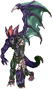

2nd Power Plant
Jump to navigation
Jump to search
Overview

2nd Power Plant is the farm map if you want to farm  Varmeal Tickets. They drop from all monsters on this map at a 25% rate.
Varmeal Tickets. They drop from all monsters on this map at a 25% rate.
Access to the dungeon is made through the portal at as shown on the minimap on the right.
Monsters
| Image | Name | Level | HP | Size / Race / Element |
|---|---|---|---|---|
|  | Magic Poisoned Plaga | 192 | 2,946,697 | Large / Demon / Poison 3 |

|
Magic Poisoned Sanare | 194 | 2,979,073 | Medium / Demi-Human / Holy 2 |

|
Powerful Magic | 193 | 2,961,272 | Medium / Formless / Ghost 3 |
| Sharp Magic | 193 | 2,960,243 | Medium / Formless / Ghost 3 |
Cards
| Card | Type | Effects |
|---|---|---|
| Weapon Card |
| |
| Accessory Card |
| |
| Accessory Card |
| |
| Accessory Card |
|